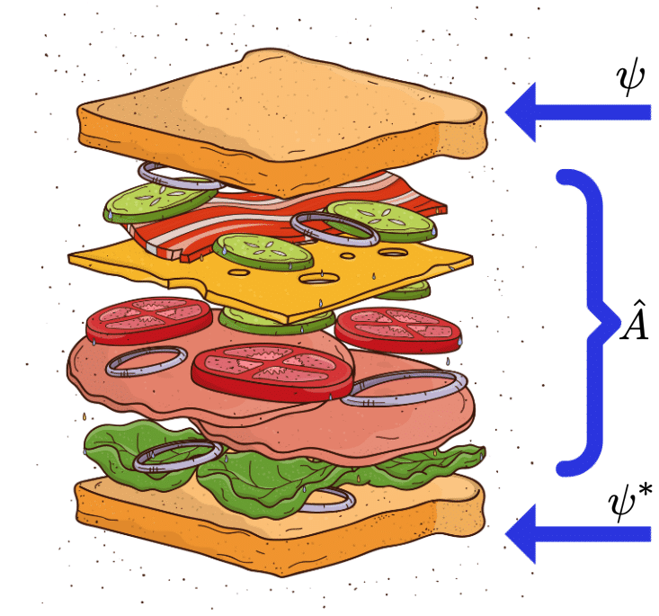

Learning objectives
Understand the role of the time-dependent and time-independent Schrödinger equations and their applications
Familiarise yourself with the concepts of operators in quantum mechanics, their mathematical structure and physical meaning
Understand the conservation of probability and its implications for the wavefunction
Evaluating expectation values and their time evolution
Understand the meaning of expectation values and the connection between quantum physics and the classical limit
The material of this lecture is mostly covered in Chapter 3 of Bransden-Joachain and (Bransden and Joachain 1989) and Chapter 2 of Griffiths (Griffiths and Schroeter 2019).
3.1 The importance of the superposition principle
Before getting into this chapter, we need a premise to clarify why I’ll go back and talk about single plane waves after all we discussed in the previous chapter. In short: why will we keep using single plane waves in the following?
In the previous chapter we saw that we could in principle describe a free particle using a single plane wave (Equation 2.6), but this leads to complication, such as infinite delocalisation in space. We saw that to get around this (and other) issues, we can consider a sum (or linear combination) of wavefunctions with different weights, and we saw that in the continuum, for infinitely many waves, this leads to a Fourier transform of a wavefunction in momentum space (Equation 2.15).
There is one important principle that we need to keep in mind.
If two wavefunctions \(\Psi_1\) and \(\Psi_2\) are both solutions of a wave equation which is linear and homogeneous, the superposition principle ensures that any linear combination \(c_1 \Psi_1 + c_2 \Psi_2\) (with constants \(c_1\) and \(c_2\)), is also a solution of the same wave equation.
This can be extended to as many waves as we want! So in general it is enough to find the solution to a wave equation as a plane wave than as a wavepacket.
3.2 The time-dependent Schrödinger equation
The energy of a free particle is given by its kinetic energy. For a particle of mass \(m\), moving in one direction \(x\) with momentum \(p_x\), we can write
\[ E = \frac{p_x^2}{2m}. \tag{3.1}\]
Let’s consider a plane wave to describe it… \[ \Psi(x,t)=Ae^{i(kx-\omega t)}=Ae^{i(p_x x-Et)/\hbar}, \tag{3.2}\] where we used the relations \(k=p_x/\hbar\) and \(\omega=E/\hbar\).
If we consider the wavefunction at the time \(t=0\), \(\Psi(x,0)=Ae^{ikx}=Ae^{ip_x/\hbar}\) we can see from Equation 3.2 that the time evolution of a wavefunction \(\Psi(x)\) of definite energy can be obtained from \[ \Psi(x,t)=e^{-iEt/\hbar}\Psi(x,0), \tag{3.3}\]
so during the time evolution of a quantum state having a defined energy only the phase is evolving, and the state \(\Psi(x,t)\) is called a stationary state, satisfying the condition
\[ |\Psi(x,t)|^2=|\Psi(x,0)|^2. \tag{3.4}\]
If we differentiate Equation 3.2 with respect to time, we obtain
\[ \frac{\partial \Psi(x,t)}{\partial t}=-\frac{iE}{\hbar}\Psi(x,t), \tag{3.5}\]
and if we differentiate twice with respect to \(x\), we find
\[ \frac{\partial^2 \Psi(x,t)}{\partial x^2}=-\frac{p_x^2}{\hbar^2}\Psi(x,t). \tag{3.6}\]
Using Equation 3.1, we see that Equation 3.2 satisfies the partial differential wave equation
\[ i\hbar \frac{\partial}{\partial t} \Psi(x,t) = -\frac{\hbar^2}{2m}\frac{\partial^2}{\partial x^2} \Psi(x,t). \tag{3.7}\]
This is the one-dimensional time-dependent Schrödinger equation for a free particle.
Now, this wave equation is linear and homogeneous, so a linear superposition of plane waves, such as the wavepacket of Equation 2.15, will still be a solution of Equation 3.7.
We can generalise the Schrödinger equation of Equation 3.7 to the case where a particle is not free, but it is subject to a time-independent potential \(U(x)\), hence it is acted on by a force \(F=-\frac{d U}{d x}\).
In this case, we get the following form of the one-dimensional time-dependent Schrödinger equation for a particle moving in a potential.
Whilst we are considering a time-independent potential here, we can have an even more general form of the Schrödinger equation with a time-dependent potential \(U(x,t)\). In this course however we will mostly focus on the case of time-independent potentials.
Note that the time-dependent Schrödinger equation (TDSE)(Equation 3.8) contains a first order time derivative \(\partial/\partial t\), which means that if the initial value of the wavefunction is given at an initial time \(t=t_0\), i.e. \(\Psi(x,t_0)\), then the value of the wavefunction at any later time \(t\) can be found by solving the TDSE.
Therefore the fundamental task is to obtain a solution to \(\Psi(x,t)\) to the Schrödinger equation (Equation 3.8) that satisfies the given initial conditions.
3.2.1 Operators in the Schrödinger equation
Let’s start to introduce some words that we will use during the whole course and that we will describe more in detail later in the chapter.
The first thing it is useful to introduce here is the concept of operator, which are mathematical entities that transform one wavefunction into another.
The term on the left hand side of Equation 3.7, \(i\hbar \frac{\partial}{\partial t}\), applied on the wavefunction, is the total energy operator - a mathematical function (of time, \(t\)) acting on the wavefunction that returns the total energy, and we indicate with the symbol \(\hat{E}\). To indicate operators we use the hat symbol.
This operator yields the same result of another operator that also gives the total energy of the system, but acts on the spatial coordinates instead of time. This is the the Hamiltonian operator, \(\hat{H}\), which describes the sum of the potential and kinetic energy operators, respectively \(\hat{T}=\frac{-\hbar^2}{2m}\frac{\partial^2}{\partial x^2}\) and \(\hat{U}\).
For the right hand side of Equation 3.7 we can also define the momentum operator \(\hat{p}\) (in 1D) as below.
We will talk more about operators later in the chapter.
Having introduced this formalism, we can cast the TDSE of Equation 3.8 in the following alternative forms:
\[ i\hbar \frac{\partial}{\partial t}\Psi(x,t) = \hat{H}\Psi(x,t), \tag{3.12}\]
\[ \hat{E}\Psi(x,t) = \hat{H}\Psi(x,t). \tag{3.13}\]
3.2.2 Exercise
Test the time-dependent Schrödinger equation with a plane wave of amplitude \(A\) and a flat potential \(U(x)=U\). What is the energy obtained?
Solution
\(\Psi(x,0)=Ae^{i(kx-\omega t)}\).
– Add rest of solution –
3.2.3 Continuity condition
The following is important and clarifies why in the previous chapter we imposed certain conditions on the wavefunctions.
If the potential \(U(x)\) is a continuous function of \(x\), then every function in Equation 3.8, i.e. \(\Psi(x,t), \partial\Psi/\partial t, \partial \Psi/\partial x\), must be continuous.
If \(U(x)\) shows any finite discontinuities (jumps) with \(x\), then \(\partial^2\Psi(x)/\partial x^2\) should also have corresponding finite jumps. For this to happen, we need $ /x$ to be continuous with \(x\): if this were not the case, \(\partial^2\Psi(x)/\partial x^2\) would be infinite at points in which $ /x$ changed discontinuously. The continuity of $ /x$ on the other end also implies that \(\Psi(x,t)\) and \(\partial\Psi/\partial t\) have to be continuous.
What about the continuity with time?
If \(U(x,t)\) is a continuous function of \(t\), so will be \(\Psi(x,t)\) and \(\partial\Psi/\partial t\). However, if \(U(x,t)\) has a finite jump with time, \(\partial\Psi/\partial t\), while \(\Psi(x,t)\) will still be a continuous function of \(t\).
3.2.4 The time-dependent Schrödinger equation in 3D
We can generalise the 1D TDSE to 3D as follows:
\[ i\hbar \frac{\partial}{\partial t} \Psi(\mathbf{r},t) = -\frac{\hbar^2}{2m}\nabla^2 \Psi(\mathbf{r},t)+U(\mathbf{r})\Psi(\mathbf{r},t), \tag{3.14}\] where \[ \nabla^2 = \frac{\partial^2}{\partial x^2}+\frac{\partial^2}{\partial y^2}+\frac{\partial^2}{\partial z^2} \tag{3.15}\]
is the Laplacian operator.
It is useful now to refresh the definitions of gradient and divergence as well, as they will be used in the following section. The gradient \(\nabla\) is defined as \[ \nabla=\frac{\partial}{\partial x}+\frac{\partial}{\partial y}+\frac{\partial}{\partial z}, \tag{3.16}\]
and we can build the divergence from the gradient, by associating an unit vector to each partial derivative, for each direction. Remember that gradient and Laplacian act on functions, whereas the divergence is a vector, so can be used for scalar or vector product with another vector.
3.3 Probability conservation
In the previous chapter we explained how, according to the Born’s postulate, the wavefunction has the role of probability amplitude and it can be used to define the probability density (see Equation 2.2).
We have also seen that this leads to the normalization condition for the wavefunction (Equation 2.4), since the probability to find the particle over all space must be equal to one.
Let’s now consider what happens to the probability as time changes. Since there is no loss of information, we expect this to be unchanged, so the wavefunction \(\Psi(x,t)\) should be normalised at all times: \(\int |\Psi(x,t)|^2dx=1\). This means that the probability is conserved over the whole volume, and mathematically we can write this condition, that we will demonstrate in the following, as \[ \frac{d}{dt}\int_V P(\mathbf{r},t) d\mathbf{r} = 0. \]
Using the definition of probability density (Equation 2.2), we can write the left hand term above as \[ \frac{d}{dt}\int_V P(\mathbf{r},t) d\mathbf{r} = \int_V d\mathbf{r} \frac{d}{dt}(\Psi^*(\mathbf{r},t)\Psi(\mathbf{r},t))=\int_V d\mathbf{r} \left[\Psi^* \left(\frac{d\Psi}{dt}\right)+\left(\frac{d\Psi^*}{dt}\Psi\right) \right], \]
where we could take the derivative \(d/dt\) inside the integral because the probability function is continuous with continuous partial derivatives.
Applying the TDSE (Equation 3.8) we can cast this in the form
\[ \frac{d}{dt}\int_V d\mathbf{r} P(\mathbf{r},t) = \int_V d\mathbf{r} \frac{i\hbar}{2m}\left[\Psi^* \frac{d^2}{d\mathbf{r}^2}\Psi-\left(\frac{d^2}{d\mathbf{r}^2}\Psi^*\right) \Psi \right]. \tag{3.17}\]
Using the definitions of gradient and divergence (Equation 3.16), we can rewrite Equation 3.17 in the form
\[ \frac{d}{dt}\int_V d\mathbf{r} P(\mathbf{r},t) = \int_V \mathbf{\nabla}\cdot \frac{i\hbar}{2m}\left[\Psi^* \nabla\Psi-\left(\nabla\Psi^*\right) \Psi \right]. \tag{3.18}\]
For convenience we can introduce the vector field \[ \mathbf{j}(\mathbf{r},t)= -\frac{i\hbar}{2m}\left[\Psi^* \nabla\Psi-\left(\nabla\Psi^*\right) \Psi \right], \tag{3.19}\]
which is known as probability current or probability flux, and Equation 3.18 can be written as
\[ \frac{d}{dt}\int_V d\mathbf{r} P(\mathbf{r},t) = -\int_V \nabla\cdot \mathbf{j}(\mathbf{r},t) d\mathbf{r} = -\int_S \mathbf{j}\cdot d\mathbf{S} = 0, \tag{3.20}\]
where in the last passage we used the divergence theorem (aka Green’s theorem), stating that the integral of the divergence of a vector, over a volume \(V\), is equal to the surface integral of the component of that vector along the outward normal, taken over a closed surface \(S\).
Now, the last integral over the surface \(S\) in the last integral of Equation 3.20 extends to infinity, and since the wavefunction is not fully delocalised (because it can be normalised), then its extension to infinity will be zero and the integral is overall equal to zero (\(\Psi\to 0\) if \(\mathbf{r}\to \infty\)).
Notably, from this result in Equation 3.20 we can say that the probability current respects a conservation law, which has the form of a continuity equation, as below.
What do we learn from this? That physical wavefunctions must have finite probability fluxes: we cannot have infinite rates of probability density moving between spatial regions (or more generally between regions in any generalised coordinates of the system).
- The term \(\nabla\Psi(\mathbf{r})\) in \(J(\mathbf{r})\) means that the spatial wavefunction must be continuous, to avoid delta-function spikes in flux;
- \(\nabla\cdot \mathbf{j}\) in the probability conservation (Equation 3.20) means that the wavefunction must be differentiable everywhere, \(\frac{\partial\Psi}{\partial x}\) must be continuous, otherwise there would be an unphysical divergence of \(\frac{\partial P}{\partial t}\) (cfr Equation 3.21).
- Square-integrability coming from the normalization condition means that \(\Psi(x)\to 0\) for \(|x|\to \infty\).
There is a caveat: for infinite potentials and infinitely fast changes, the second of these rules no longer holds.
So \(\Psi\) must be continuous and differentiable (have continuous derivatives), or smooth. These requirements, that we anticipated in the previous chapter, in addition to the established normalization requirement of square-integrability, are the key to deriving the boundary conditions that allow us to find wavefunctions for various quantum systems, seen in the following chapters.
Another important result is that the probability current (Equation 3.19) is identically zero if either:
- the wavefunction \(\Psi(\mathbf{r}, t)\) is real-valued; or
- it has a complex phase which applies uniformly to all space positions \(x\), hence unaffected by the space derivative \(\nabla\).
The first of these is trivial to see: if \(\Psi\) is real valued then \(\Psi^* = \Psi\) and \((\nabla\Psi^*) = \nabla\Psi\), so the two terms in \(\mathbf{j}\) (cf. Equation 3.19) cancel.
The second is slightly less obvious: if \(\Psi = e^{i\Phi}\psi(\mathbf{r})\), then \(\Psi^*\nabla\Psi = e^{i\Phi}e^{-i\Phi}\psi\nabla\psi=\psi\nabla\psi=\Psi\nabla\Psi^*\), and again the two terms cancel.
The consequence of this second case in particular is that stationary states, whose time-evolution is a uniform, energy-coupled phase \(e^{iEt/\hbar}\), have no probability flux. Which is a good thing: they are stationary states precisely because their probability distribution is time-invariant, so there’d better not be any probability current flowing between regions!
3.4 The time-independent Schrödinger equation
Let’s go back to considering the TDSE in 1D, Equation 3.8.
If the potential \(U(x)\) is time-independent, we can use the method of separation of variables for the wavefunction:
\[ \Psi(x,t)=\psi(x)T(t). \]
Then \[ \frac{\partial \Psi}{\partial t} = \psi(x)\frac{dT}{dt},\quad \frac{\partial^2 \Psi}{\partial x^2} = \frac{d^2\psi}{dx^2}T(t), \]
and we can rewrite the TDSE, Equation 3.8, as \[ i\hbar \psi(x)\frac{dT}{dt}=-\frac{\hbar^2}{2m}\frac{d^2\psi(x)}{dx^2}T(t)+V(x)\psi(x)T(t). \]
Dividing this by \(\Psi=\psi T\), we obtain
\[ i\hbar \frac{1}{T(t)}\frac{dT}{t}=-\frac{\hbar^2}{2m}\frac{1}{\psi(x)}\frac{d^2\psi(x)}{dx^2}+V(x), \tag{3.22}\]
where it is clear that all the time dependence is on the left hand side and all the space dependence on the right hand side, so this is of the form: function of t = function of x, for all t and all x. This means that both sides must be equal to a constant! We call this constant \(E\), as it represents the total energy - we can see this by comparing the operators on each side to the total energy operator and the Hamiltonian operator defined in Equation 3.9 and Equation 3.10.
From the RHS of Equation 3.22, we obtain the (1D) time-independent Schrödinger equation.
In the following section we will see that this is an eigenvalue equation.
From the LHS of Equation 3.22, we can extract
\[ i\hbar \frac{1}{T(t)}\frac{dT}{t}=E\implies i\hbar \frac{dT}{t}=ET(t), \tag{3.25}\]
which is easy to solve: \[ T(t)=C e^{-iEt/\hbar}, \tag{3.26}\]
where \(C\) is an arbitrary constant and we can set it to \(C=1\).
We can then write the general solution of a wavefunction with separable variables (again, this holds for \(U\) independent of \(t\)), as a stationary state.
In fact, we have already anticipated this at the beginning of the chapter when we looked at a plane wave, Equation 3.3.
3.5 Operators, expectation values and eigenfunctions
In this section we will introduce some notation and concepts that will be fundamental for the whole course (and for other courses next year).
3.5.1 Operators
In Section 3.2.1 we have already anticipated what operators are.
Operators are mathematical entities that transform a wavefunction onto another wavefunction.
In fact, we have already defined the Hamiltonian operator (Equation 3.10), which gives the total energy of the system, and the momentum operator (Equation 3.11). Both of these quantities are physical observables, i.e. physical quantities that we can measure. In general, observable such as momentum, position, spin, angular momentum, etc, are described by operators. However, the opposite is not true! Not all operators are observable, and we will see an example of this when we do the quantum harmonic oscillator.
Observables are represented by Hermitian operators.
Hermitian operators are operators that return real eigenvalues, therefore the following is valid:
\[ \int \psi^* \hat{A} \psi dx = \int (\hat{A}^* \psi^*)\psi dx. \tag{3.29}\]
Physical quantities like momentum or energy can be “pulled out” of wavefunctions by applying the operators on them.
In the following you can see some examples of this, with the momentum and total energy operators (Equation 3.11 and Equation 3.9), applied on a plane wave \(\Psi(x,t)=Ae^{ikx-\omega t}\).
\[ \hat{p}\Psi = -i\hbar\frac{\partial \Psi}{\partial x} = -i\hbar\frac{\partial A e^{i(kx-\omega t)}}{\partial x} = \hbar k Ae^{i(kx-\omega t)}=p\Psi, \tag{3.30}\]
\[ \hat{E}\Psi = i\hbar\frac{\partial \Psi}{\partial t} = i\hbar\frac{\partial A e^{i(kx-\omega t)}}{\partial t} = \hbar\omega\Psi = E\Psi. \tag{3.31}\]
3.5.1.1 More operators
The canonical operators, in position-space representation, are:
- Total energy: \(\hat{E} = i\hbar \frac{\partial}{\partial t}\)
- Position: \(\hat{x}\) (1D) or \(\hat{\mathbf{r}}\) (3D)
- Momentum: \(\hat{p}_x=-i\hbar\frac{\partial}{\partial x}\) (1D) or \(\hat{\mathbf{p}}=-i\hbar\nabla\)
From these, all other operators can be constructed, including:
- Kinetic energy: \(\hat{T}=-\frac{\hbar^2}{2m}\nabla^2\)
- Hamiltonian: \(\hat{H} = -\frac{\hbar^2}{2m}\frac{\partial^2}{\partial x^2}+U(x,t)\)
- Angular momentum: \(\hat{L} = \hat{\mathbf{r}}\times\hat{\mathbf{p}}=-i\hbar \mathbf{r}\times\mathbf{\nabla}\).
We will encounter many more operators during the course.
3.5.2 Expectation values
In Chapter 2 we have discussed the Born’s interpretation of the wavefunction, which is related to the probability density (Equation 2.2).
For each run of an experiment in quantum mechanics we can’t predict exactly the outcome in a deterministic way, due to the probabilistic nature of QM, but if we run the experiment many times, we can have an average of many measurement, which is what we would expect to obtain in the classical limit: this is called the expectation value, and it is defined as follows
The expectation value of an operator \(\hat{A}\) (described by a function \(f(x)\)), calculated on the wavefunction \(\Psi(x)\), is \[ \langle \hat{A} \rangle = \int_{-\infty}^{\infty} dx \Psi^*(x)\hat{A}(x)\Psi(x) \tag{3.32}\]
Just make a “sandwich” of the operator between the wavefunction and its complex conjugate, as in Figure 3.1!

For some “normal” operators \(A(x)\) (such as \(\hat{x}\)), \(A\) and \(\Psi\) commute, i.e. their order is not relevant: \(A(x)\Psi(x)=\Psi(x)A(x)\). In such cases: \(\langle \hat{A} \rangle = \int_{-\infty}^{\infty} dx \Psi^*(x)A(x)\Psi(x) = \int_{-\infty}^{\infty} dx A(x)P(x).\)
However, this is not always the case! For example, the momentum operator \(p_x\) is defined by a derivative over \(x\), so it will change the function that follows it, and the order in this case matters!
The ordering in \(\langle \hat{A}\rangle =\int_{-\infty}^{\infty} dx \Psi^*(x) \hat{A}(x) \Psi(x)\) matters!
3.5.2.1 Exercise
Calculate the expectation value \(\langle x \rangle\) of a Gaussian wavefunction \(\psi(x)\).
A Gaussian wavefunction has the form \(\psi(x)=\frac{1}{\sqrt{Z}}e^{-x^2/4\sigma^2}\), where \(1/Z\) is the normalization factor for \(|\Psi|^2\).
Solution
\[ \langle x \rangle = \frac{1}{Z}\int_{-\infty}^{\infty} dx |e^{-x^2/4\sigma^2}|^2 = \frac{1}{Z}\int_{-\infty}^{\infty} dx e^{-x^2/2\sigma^2} = 0, \]
because the function has odd symmetry.
Similarly, you can demonstrate that \(\langle x^2 \rangle = \sigma^2\). Do it as a homework!
We will evaluate expectation values quite a lot, and it will be useful to remember that the variance \(\Delta^ A\) (or \(\sigma^(A)\)) of an operator \(\hat{A}\) is given by Equation 3.33.
3.5.2.2 Exercise
Calculate the expectation value \(\langle p \rangle\) of a Gaussian wavefunction \(\psi(x)\).
Hint 1
The starting point is the same as the example above.Hint 2
Be careful to the order, now it matters!Solution
– ADD SOLUTION –
3.5.3 Eigenfunctions
Before we explain what eigenfunctions are, let’s refresh some good ol’ linear algebra stuff (please revise this as you will need it a lot!).
3.5.3.1 Remember eigenvectors and eigenvalues?
Let’s go back to some maths that you should know well, about matrices, eigenvectors and eigenvalues.
Consider a matrix \(\mathbb{A}\) acting on a vector \(\mathbf{v}\). If \[ \mathbb{A}\mathbf{v}=\lambda\mathbf{v}, \tag{3.34}\]
with \(\lambda\) a constant, then this is called the eigenvalue equation, where:
- \(\mathbf{v}\) is an eigenvector of \(\mathbb{A}\),
- \(\lambda\) is the eigenvalue.
What does this mean? It means that the application of the matrix \(A\) on the vector \(v\) returned the vector \(v\) (in the same direction), but rescaled, with a scaling constant \(\lambda\).
You can check a visualization of this in the interactive resource embedded below, or found at this link.
3.5.3.2 Eigenfunctions (and eigenstates)
Why do I dig out now the eigenvectors and eigenvalues stuff from the “forgotten-maths-I-thought-I-no-longer-needed” pit? (Spoiler: you will need this a lot…)
Because earlier I mentioned that the time-independet Schrödinger equation (Equation 3.24) is an eigenvalue equation.
Compare this with the eigenvalue equation in Equation 3.34. Do you see the similarities? Instead of having a matrix \(\mathbb{A}\) and a vector \(\mathbf{v}\), we have an operator \(\hat{H}\) and a wavefunction \(\psi(x)\), but the TISE tells me that if I apply the Hamiltonian operator \(\hat{H}\) on the wavefunction \(\psi(x)\), I get the same wavefunction \(\psi(x)\), but rescaled by a real number which is given by the energy \(E\)!
So in analogy with eigenvalues and eigenvectors, we can say that in the TISE \(\psi(x)\) is an eigenfunction and \(E\) is the eigenvalue (for the energy in this case).
In the previous section we saw two more examples of eigenvalue equations: Equation 3.30 and Equation 3.31.
Below is a generalised definition of the eigenfunction, analogous to the one for eigenvectors given above. This is very important: the eigenfunctions satisfying eigenvalue equations are the building blocks of quantum states.
3.6 General solution of the TDSE - expansion in energy eigenfunctions
So now we are getting to the point… the TISE is an eigenvalue equation, and when we say that we want to solve it, for a given Hamiltonian, what we mean is that we want to find the set of eigenfunctions and eigenvalues for that Hamiltonian! But why is that important?
Now that we added some extra tools to our quantum toolbox, we can expand on that (pun intended, spoilers in the section title) and gain a better understanding of what we can extract from the Schrödinger equation and from its eigenfunctions and eigenvalues.
First, let’s get back to some properties of the stationary states. Given the TISE (Equation 3.24), the expectation value of the total energy is \[ \langle H\rangle = \int \psi^* H \psi dx = E \int |\psi|^2 dx = E, \]
which results from the normalization of the wavefunction \(\psi(x)\). Nothing really new so far. Let’s now calculate the variance:
\[ \Delta H = \langle H^2 \rangle - \langle H \rangle^2 = E^2-E^2 = 0. \]
What does it mean that the variance is 0? It means that every time we measure the energy on the eigenstate \(\psi\), the energy we find is going to be always exactly \(E\), because the variance of the measurement is 0! Now it is clear why we say that stationary state are states with a well defined total energy.
So it seems that stationary states are pretty boring after all: they have a well defined energy, their probability is not evolving with time, they only have a time-evolving global phase, and what do we even do with them? How can we describe any system that evolves with time and does not have a well determined energy? Remember how we opened this chapter, emphasising the importance of the superposition principle… this is going to give us something useful here.
Stationary states, or eigenstates, are not that useless after all, and this is because the general time-dependent solution for any system can be obtained from a (weighted) sum of stationary states - such a system will have indeterminate energy.
So, the TISE is useful because it gives a set of eigenvalues, \(E_1, E_2, E_3,...\) and eigenstates, \(\psi_1(x), \psi_2(x), \psi_3(x),...\), from which we can obtain a (total) wavefunction for each allowed value of the energy, i.e. \[ \Psi_1(x,t)=\psi_1(x)e^{-iE_1t/\hbar},\quad \Psi_2(x,t)=\psi_2=(x)e^{-iE_2t/\hbar},\, ... . \tag{3.36}\]
The eigenstates \(\psi_1(x), \psi_2(x), ...\) of Hermitian operators are orthogonal, meaning that the projection, or overlap, of one on the other is zero, or in mathematical terms:
\[ \int dx \psi_i(x)\psi_j(x) = \delta(i-j), \tag{3.37}\]
so the integral is \(0\) if \(i\neq j\) and \(1\) if \(i=j\) (due to the normalization condition).
Now we can use the superposition principle to solve the TDSE, since if each of the wavefunction in Equation 3.36 is a solution of the TDSE, then a linear combination (i.e. weighted sum) of them is also a solution to the TDSE! We therefore obtain the general solution of the TDSE.
Equation 3.38 means that the eigenfunctions \(\psi_n\) constitute a complete basis, so every wavefunction at the time \(t=0\) can also be represented as a weighted sum of the eigenstates: \[ \Psi(x,0) = \sum_{n=1}^{\infty} c_n \Psi_n(x,0). \tag{3.39}\]
Since the time-dependance in the general solution of the TDSE Equation 3.38 is not merely a global phase, the probability of the general state, \(|\Psi(x,t)|^2\) is now going to be also time-dependent, in contrast with the probability of stationary states:
\[ \begin{aligned} P(x,t) = |\Psi(x,t)|^2 &= \sum_i c_i^* e^{iE_it/\hbar}\psi^*_i(x,0)\sum_j c_j^* e^{-iE_jt/\hbar}\psi^*_j(x,0) \\ &= \sum_{i,j} c^*_i c_j e^{-i(E_j-E_i)t/\hbar}\psi^*_i(x)\psi_j(x). \end{aligned}, \tag{3.40}\]
where you can now see that the local phases \(e^{-i(E_j-E_i)t/\hbar}\) create interference.
The probability of Equation 3.40 still has to be normalised (its integral must be one), i.e. \(\int P(x,t)dx=1\), and it follows that
\[ \int P(x,t)dx=\sum_{i,j} c^*_i c_j e^{-i(E_j-E_i)t/\hbar}\int dx \psi^*_i(x)\psi_j(x) = \sum_{i,j} c^*_i c_j e^{-i(E_j-E_i)t/\hbar} \delta(i-j) = 1, \]
where we used the property of orthogonality of the eigenstates \(\psi_i\) (cfr. Equation 3.37). Therefore, imposing \(i=j\), the normalization condition reduces to the following normalization condition for the amplitudes:
\[ \sum_i |c_i|^2 = 1. \tag{3.41}\]
You can see get a better understanding of how the principle of superposition works by using the resource at this link, also embedded below. Given a general solution, we can express this as a sum of eigenstates, weighted by appropriate coefficients (tick the “show expansion in energy eigenfunctions box to see it”). There is also an “expansion game” where you can try to find the correct coefficients, given some wavefunctions!
3.7 Commutators
Going back to operators, something important to know is that the order of the operators matter, and this property is reflected mathematically in the commutators.
In fact, we have already seen the importance of commutation when we stressed that in the expectation values, the ordering of the functions matters!
The commutator between two operators is defined as
\[ [\hat{A},\hat{B}] = \hat{A}\hat{B} - \hat{B}\hat{A}. \tag{3.42}\]
The order matters for both operators and wavefunctions.
If the commutator between two operators is non-zero, swapping the order of the two operators will result in different final wavefunctions: \[ [\hat{A},\hat{B}]\neq 0 \implies (\hat{A}\hat{B})\psi \neq (\hat{B}\hat{A})\psi. \]
If the commutator is zero, it does not matter which order we use to apply \(\hat{A}\) and \(\hat{B}\), i.e. \[ [\hat{A},\hat{B}]=0\implies AB=BA. \tag{3.43}\]
3.7.1 Properties of commutators
These properties are very important, please remember them, as they will be essential during the whole course, but they will also be your bread and butter in any other course tackling quantum mechanics applications next year.
Transpose: \([\hat{A},\hat{B}]=-[\hat{B},\hat{A}]\)
Expansion: \([\hat{A}\hat{B},\hat{C}]=\hat{A}[\hat{B},\hat{C}]+[\hat{A},\hat{C}]\hat{B}\)
Jacobi identity: \([\hat{A},[\hat{B},\hat{C}]+[\hat{B},[\hat{C},\hat{A}]]+[\hat{C},[\hat{A},\hat{B}]]=0\).
Hermitian conjugate: \([\hat{A},\hat{B}]^{\dagger}=[\hat{B}^{\dagger},\hat{A}^{\dagger}]\)
The dagger symbol indicates the transpose conjugate - it makes more sense to use this name if we use the matrix formalism of QM instead of the wave formalism, but for the wave formalism consider the complex conjugate of the operators, so treat the \(\dagger\) symbol as a \(*\).
3.7.2 The canonical commutation relation
An example of non-commuting operators is given by the conjugate variables \(\hat{x}\) and \(\hat{p}_x\), which is particularly important, so important that it has its own name: the canonical commutation relation.
3.7.3 The generalised uncertainty principle
The uncertainty for position and momentum can be formalised into a very important result between other pairs of conjugate variables. We will skip the demonstration of how to get to this result here (it is in the slides if you are curious), but the generalised uncertainty principle for two incompatible operators \(\hat{A}\) and \(\hat{B}\) is:
\[ \Delta A \Delta B \geq \frac{1}{2i} |\langle [\hat{A},\hat{B}] \rangle | \tag{3.47}\]
3.7.4 Exercise
Demonstrate the canonical commutator of Equation 3.44.
Consider the commutator applied to a generic wavefunction \(\psi(x)\) in 1D, and use the form of the momentum operator.
Solution
Let’s start with the commutator applied to a wavefunction \(\psi(x)\) in 1D: \[ [\hat{p}_x,\hat{x}]\psi(x)=(\hat{p}_x \hat{x}-\hat{x}\hat{p}_x) \psi(x). \]
To lighten the notation and avoid misunderstandings, in the following I write \(\psi(x)\) as \(\psi\), so the \(x\)-dependance is implicit.
Using the momentum operator definition of Equation 3.11:
\[ [\hat{p}_x,\hat{x}]\psi = -i\hbar \left( \frac{\partial}{\partial x}(x\psi) - x \frac{\partial}{\partial x}\psi \right) = -i\hbar \left( \frac{\partial x}{\partial x}\psi +x \frac{\partial}{\partial x}\psi - x \frac{\partial}{\partial x}\psi \right) = -i\hbar \psi. \]
Using the transpose properties of the commutators, then \[ [\hat{p}_x,\hat{x}] = -i\hbar \implies [\hat{x},\hat{p}_x]=i\hbar. \]
3.8 Time evolution of expectation values
We have seen the time-evolution of stationary state wavefunctions (Equation 3.27) and the directly related probability densities; now we wish to see how these map into the time evolutions of expectation values, for values which may or may not share a compatible eigenstate basis with the Hamiltonian. Taking the time-derivative of an expectation value and being careful (as ever) to apply to product rule correctly, the key result is shown below.
\[ \frac{d\langle\hat{A}\rangle}{dt}=\frac{d}{dt}\int dx \Psi^* \hat{A} \Psi = \int \frac{\partial \Psi^*}{\partial t} \hat{A} \Psi + \int dx \Psi^* \frac{\partial \hat{A}}{\partial t} \Psi + \int dx \Psi^* \hat{A} \frac{\partial \Psi}{\partial t} \]
Using the TDSE (Equation 3.12), we can cast the above equation in the form \[ \begin{aligned} \frac{d\langle\hat{A}\rangle}{dt}&=-\frac{1}{i\hbar} \int dx (\hat{H}\Psi)^* \hat{A} \Psi + \int dx \Psi^* \frac{\partial \hat{A}}{\partial t} \Psi + \frac{1}{i\hbar} \int dx \Psi^* \hat{A} \hat{H}\Psi\\ &= \frac{1}{i\hbar} \int dx \Psi^* (AH-HA)\Psi + \int dx \Psi^* \frac{\partial \hat{A}}{\partial t} \Psi, \end{aligned} \]
and using the definition of the commutator (Equation 3.42), we finally obtain:
\[ \frac{d\langle\hat{A}\rangle}{dt}=\frac{1}{i\hbar}\langle [\hat{A},\hat{H}] + \left\langle \frac{\partial A}{\partial t} \right\rangle. \tag{3.48}\]
This means that the rate of change of an expectation value is proportional to the commutator of its operator and the Hamiltonian operator \(\hat{H}\), plus the time-dependence of the measurement operator itself. The second term in Equation 3.48 is usually zero: the most obvious way to introduce it would be for the system environment to time-evolve, e.g. for \(U(r,t)\) to be time-dependent, which we don’t consider in this course.
For “normal” time-independet operators, the driver of change in expectation values is whether the operator \(\hat{A}\) commutes with the Hamiltonian: this makes intuitive sense since if the operator \(\hat{A}\) and the Hamiltonian are compatible, then the stationary states will be eigenstates of \(\hat{A}\) and hence the expectation value will also be stationary, i.e.
\[ [H,A]=0\implies H(A\Psi)=A(H\Psi) \implies H(A\Psi)=E A\Psi \]
and since the TISE needs to be satisfied, we need \(A\Psi=\lambda\Psi\).
In short, what does this mean? The commutation of an operator with the Hamiltonian implies time-invariance.
3.8.1 The Ehrenfest theorem and the correspondence principle
At the beginning of the course we said that, in the classical limit, i.e. when we recover the probability distribution after many repetitions of the experiment, and take the average of the physical quantities observed, quantum mechanics should return the classical physics predictions.
We have introduced the expectation values and have seen that physically these correspond to the value that on average we would obtain after repeating a measurement many times, and the standard deviation corresponds to the width of the distribution of the measurement outcomes around the expectation value. We can then guess that if we evaluate the time evolution of the expectation value for some quantities (e.g. position or momentum operators), we should obtain the classical equations of motion for those quantities. Let’s see this.
If we apply Equation 3.48 to the operators \(\hat{A}=\hat{x}\) and \(\hat{A}=\hat{p}\), considering their commutators with the non-relativistic Hamiltonian (Equation 3.10) \[ [\hat{x},\hat{H}]=[\hat{x},\hat{p}^2/2m+U(x)]=[\hat{x},\hat{p}^2/2m], \tag{3.49}\] \[ [\hat{p},\hat{H}]=[\hat{p},\hat{p}^2/2m+U(x)]=[\hat{p},U(x)], \] using the commutation properties, we obtain:
\[ \frac{d\langle x \rangle}{dt}=\frac{1}{2i\hbar m}\langle [\hat{x},\hat{p}^2]\rangle = \frac{1}{2i\hbar m}\langle \hat{p}[\hat{x},\hat{p}]+[\hat{x},\hat{p}]\hat{p}\rangle = \frac{1}{2i\hbar m}\langle 2i\hbar\hat{p} \rangle, \]
which generalised to 3D is
\[ \langle \mathbf{p} \rangle = m\frac{d\langle \mathbf{r}\rangle}{dt}. \tag{3.50}\]
Similarly, for the time evolution of the momentum expectation value, we obtain: \[ \frac{d\langle \mathbf{p} \rangle}{dt} = -\langle \nabla U \rangle, \tag{3.51}\]
which is Newton’s second law!
This recovery of classical dynamics in the expectation values of quantum mechanics is Ehrenfest’s Theorem. It is an important example of the general correspondence principle introduced by Bohr in his first nuclear-atom construction, which applied to large atomic number Z: that in the large-system statistical limit, quantum mechanics is consistent with classical physics.
QM is the fundamental physics, with classical behaviours being a handy approximation in systems where quantum features like wavefunction collapse and amplitude interference are “washed out” by the incoherent superposition of many different contributions to the total wavefunction.
Only a few special systems such as carefully prepared superfluids and Bose-Einstein condensates are able to propagate quantum effects to macroscopic scales — although the consequences of fundamentally quantum effects are immensely important in ensuring a few trifling details like the stability of matter, the distribution of structure in the universe, and solar fusion.
3.9 Summary
- In general the Hamiltonian is the generator of time-evolution for a (quantum) system.
- A state of definite energy is an eigenstate of the Hamiltonian, and its time-evolution is just a phase \(\propto Et/\hbar\).
- For time-independent potentials, the time-independent Schrödinger equation can be obtained from the time-dependent one; obtain stationary states by assuming wavefunction separable into \(r\) and \(t\) parts.
- The TISE is an eigenvalue equation, and the corresponding eigenfunctions and eigenfunctions are used to obtain stationary states.
- The general solution for the TDSE can be obtained from a linear combination of the stationary states with a definite energy.
- Wavefunctions must be square-integrable, continuous everywhere, and smooth except at infinite potential steps.
- Expectation values also time-evolve with the Hamiltonian: static operators which commute with the Hamiltonian have time-invariant expectation values.
- Ehrenfest’s theorem results from this: expectation values of position and momentum obey Newton’s Laws, cf. correspondence principle.